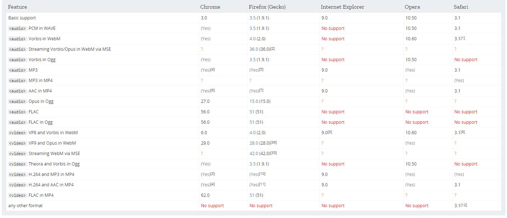

While HTML5’s native multimedia capabilities are in improvement over previous systems, it is not a perfect solution for communicating content. Currently there is not a universal video codec that is supported across all browsers. Similar quirks are common with audio files, but as a vast majority of internet audio files are encoded as MP3s it is much easier problem for browser developers to manage.
In fact, much like the multimedia plug-in situation of the previous generations, video file support is a fractured and confusing ecosystem of compatibility issues. As different vendors have attached themselves to preferred video codecs, a user’s experience with web video may depend heavily on their browser choice.
An accepted best practice for both audio and video content is to provide the same conent in multiple file formats via the 'source' tag.
By doing this, developers can mitigate the chance that a user won't be able to interact with multimedia elements.
Browser Support for HTML5 Multimedia

Full list of multimedia file support for desktop browsers.[1]
Mobile Devices
Another aspect of usability worthy of our attention is mobile multimedia concerns. Just like traditional computer-based applications, mobile browsers also have peculiarities on which files they support. However, mobile browsing brings in a new host of issues for developers to worry about like limited bandwidth, intrusive auto-play, and volume adjustment just to name a few.
Users on mobile may wish to disable multimedia content on their phone’s browser to keep their data usage low. In these instances, it is important that developers include fallback code so that the user’s interaction with a site won’t be completely disrupted if they don’t view or listen to the multimedia content.
To learn more about integrating multimedia for mobile users, check out these links:
You should always be aware of bandwidth speeds when adding multimedia elements to a site. Video files especially are much larger than text or images and can slow down a website if mishandled. Additionally, if you are concerned about keeping the about of data you host online to a minimum, you might want to look for alternatives like emending links to online video providers like YouTube or Vimeo to reduce your personal data burden. Such solutions can be convenient, but they do limit your ability to control your personal video content.